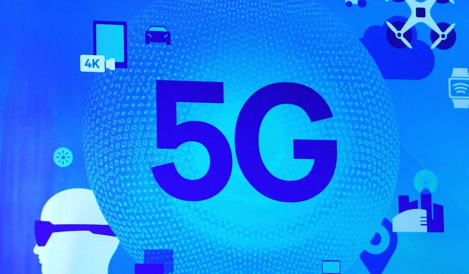

Fin 2020, le déploiement de la nouvelle génération 5G sera lancée.
Cet article résume en 10 points, les innovations de cette technologie, son évolution et son déploiement ainsi que les possibles inquiètes à son sujet, pour conclure sur ce qui est vrai ou non.

La 5G ne se résume pas seulement à une connexion plus rapide.
Cette connexion permettra de nouvelles innovations, elle offrira encore plus de possibilités, que ce soit dans le domaine de la santé, le pilotage des robots, la voiture autonome ou les objets connectés.

La crise liée à la pandémie de Covid-19 a montré le besoin essentiel de penser de nouvelles manières de soigner à distance. Plus rapide et plus fiable, la 5G permettra des progrès en matière de télémédecine et facilitera ainsi l’accès aux soins.